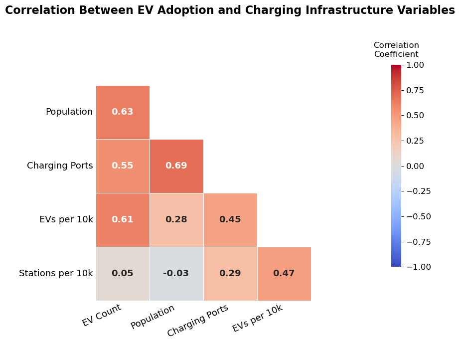

Selma Sulejmanovic & Dawn Harris
More and more electric vehicles (EVs) are being seen across the United States. Suddenly, the city is populated with cars that arrive before you hear them and dealerships that have embraced this transition. A question becomes increasingly important: How truly accessible is charging infrastructure? EV adoption proceeds to expand, but availability of charging stations and ports remain more varied between the states. Understanding the relationship between EV adoption and charging infrastructure is therefore crucial in uncovering the disparities found throughout the electrification of transportation.
Why are such disparities important to assess? The prominence of electric vehicles is growing quickly, and so is the movement toward more sustainability. By cutting carbon emissions, the United States can establish, and move toward, a more eco-friendly and clean system. The practicality of EV ownership depends on the availability of reliable charging infrastructure, however. In areas of limited and inconsistent distribution, owning an EV feels inconvenient. So despite an increase in interest, EV adoption may be experiencing setbacks.
Obtaining insight into the relationship between EV adoption and charging accessibility is necessary to figure out how states are adapting to the rapidly changing transportation systems. Gaining an understanding of the correlation between the two helps, for instance, policymakers and companies to make data-driven investments and allocate funds toward environmentally friendly decisions.
To properly evaluate the relationship, this project explores the EV and charging infrastructure patterns across the East Coast states in particular (Connecticut, Maine, North Carolina, New Jersey, New York, Virginia, and Vermont.). The larger project started with various raw datasets that consisted of EV registration data, public charging station data, county population data, and ZIP-to-county crosswalk files. All were cleaned and merged for consistency and standardization in order to work with county-level observations from the years 2020 to 2024.
The cleaning process allowed for ZIP-level datasets (such as the EV registration and charging station data) to be mapped to counties. Population data was reshaped to contain the years 2020 to 2024. Datasets were therefore aggregated into yearly totals. Once all were merged, more metrics were created to obtain a deeper analysis such as EVs per 10,000 people and [charging] ports per 10,000 people.
The choropleth map displays the distribution of EV registration counts across counties on the East Coast states being evaluated. The darker shades account for counties with higher EV registration counts, while lighter shades account for counties with lower counts. Northern Virginia and regions of New York contain substantially more concentrations of EV registrations due to the metropolitan areas. Thus, EV adoption can be linked to both population density and economic/charging development. In many counties, however, EV ownership has expanded over the years.
Each state is represented by its own scatterplot, and each point represents a county. A positive relationship suggests infrastructure tends to grow with EV adoption. However, some counties show high demand but low supply, indicating potential infrastructure gaps. Larger counties tend to have both higher EV adoption and more infrastructure. The relationship varies significantly across states, suggesting uneven development.

The correlation heatmap displays the relationship between EV adoption and charging infrastructure variables across East Coast states. The warmer colors represent a much stronger, positive correlation. EV_Count has a moderate correlation with both Population (0.63) and Charging_Ports (0.55), indicating that counties that are more populated and have an increased availability to charging sites tend to have higher EV concentrations. EVs per 10k People and Stations per 10k People also have a positive relationship (0.47), suggesting that charging station counts may similarly be contributing to EV adoption rates. Notably, Stations per 10k People display a very weak relationship (represented by lighter colors) with total population, meaning that charging stations are not evenly available based on county size. We can conclude that there is ultimately an overall positive relationship between EV adoption and charging infrastructure, but accessibility varies significantly between the states.

The line graph evaluates how charging infrastructure accessibility, measured by stations per 10,000 people, changed across East Coast states between 2020 and 2024. There is a general upward trend for all states examined, suggesting a steady expansion of stations. New York had the largest jump notably after 2021, as well as Virginia and North Carolina. Other states, such as New Jersey and Connecticut, experienced a much slower growth. The visualization represents the inconsistent accessibility to charging stations between the counties as some invest in infrastructure much more rapidly, thus affecting EV adoption.
As we look to a more sustainable future, we must first begin to see how we have adapted in the present moment. States/counties with higher EV registrations experience an overall greater increase in access to charging stations, which typically follows from more dense populations, leaving other counties to be on the shorter end of the stick. Despite the rapid interest in EVs, supply is not equally distributed, and counties thus suffer with setbacks. To support the adoption of EVs, investment toward such infrastructure will be important in sharing accessibility and promoting sustainability out on the roads.
For more information, click here.